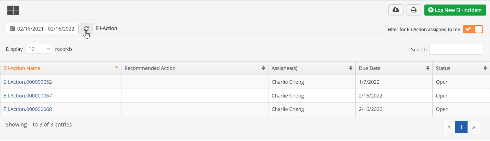
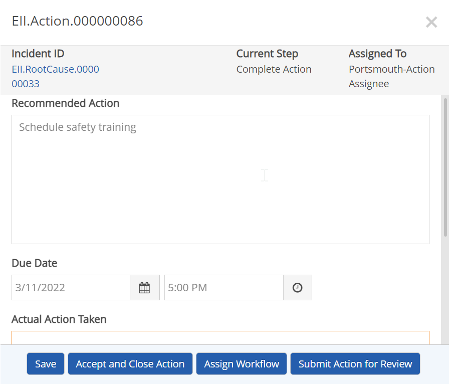

There are several ways to find actions you need to complete. The easiest ways are to:
Select My Actions from the main menu.
In most cases, if you need to complete actions assigned to you (as the current user) from inside the App, you can use the My Actions button.
To complete actions assigned to you:
Select My Actions from the main menu button:
Use the search options to find specific actions, if necessary.
Dates: Search by action due date. Click the Refresh button next to the date to apply the date filter.
Text Search: Enter text to search for in the search box. Search includes all the visible text fields in the table. Filter is automatically applied as you type.
Make sure the Filter for Actions assigned to me option is turned on, which is the default.

After viewing the action description you have the following options:
To complete an action:
Enter the Actual Action Taken and complete any fields requested.

Select the appropriate action at the bottom of the form. Labels may vary. The actions available depend on the configuration of the App and individual user permissions.
Submit for Review will send the action to another participant to review.
Mark Complete or Close (or a similar label) will close the action workflow without further input.
Save will save your changes, but the action will remain open and not complete. (You can use the Save button at the bottom of the form or at the top of the page; either will save all changes.)
Assign Workflow will allow you to assign completion to another individual or group.
After selecting an assignee, click Assign.